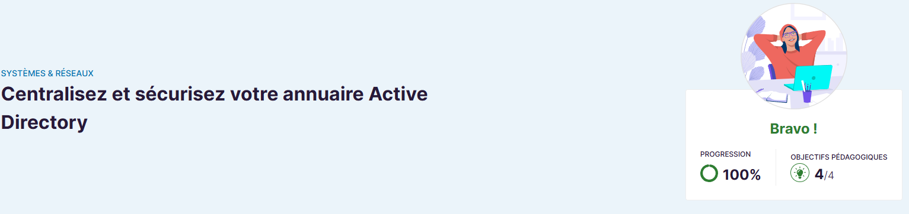
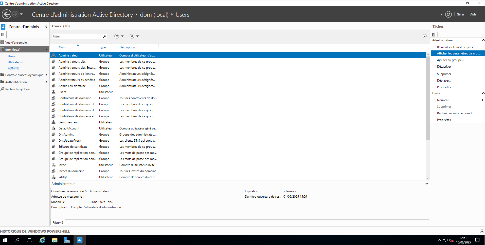
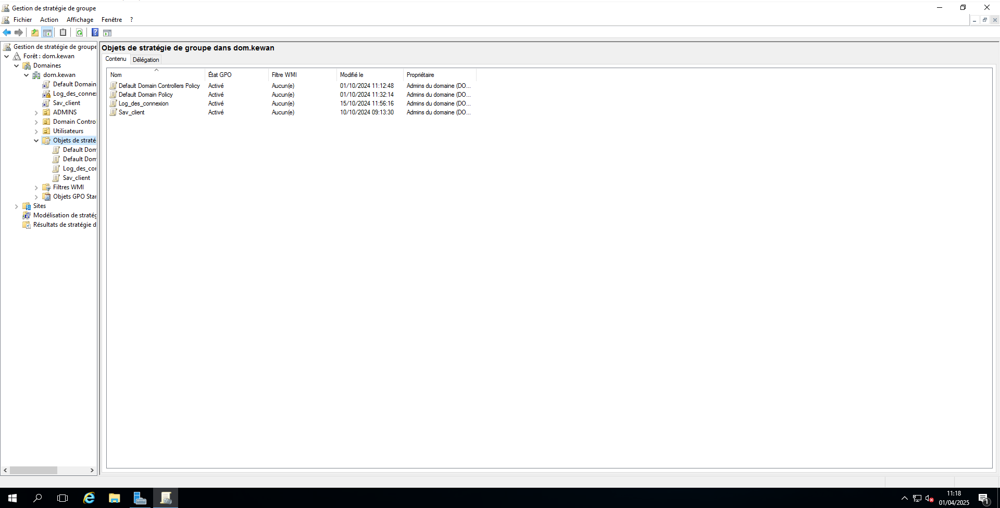

Gestion et protection des identités – Microsoft
Cette formation explique comment centraliser la gestion des utilisateurs et des ressources via Active Directory, tout en assurant la sécurité des accès et des données dans un environnement Windows.
Plateforme : 🎓 OpenClassRooms - Centralisez et sécurisez votre annuaire Active Directory
Lien : Voir la formation
Active Directory est un composant clé des infrastructures IT en entreprise. Maîtriser son administration est indispensable pour garantir la sécurité et la productivité des équipes.
Cette formation me permet d’approfondir mes compétences en administration système dans le cadre de mon BTS SIO.
Arborescence Active Directory : Organisation hiérarchique des objets utilisateurs, ordinateurs et ressources.
Stratégies de groupe (GPO) : Outils permettant de configurer les paramètres de sécurité et système à distance.
Cette formation m’a permis d’acquérir des compétences essentielles pour administrer et sécuriser un annuaire Active Directory, un pilier fondamental des infrastructures d’entreprise.
Je suis désormais capable de gérer les identités et les accès avec rigueur et efficacité.